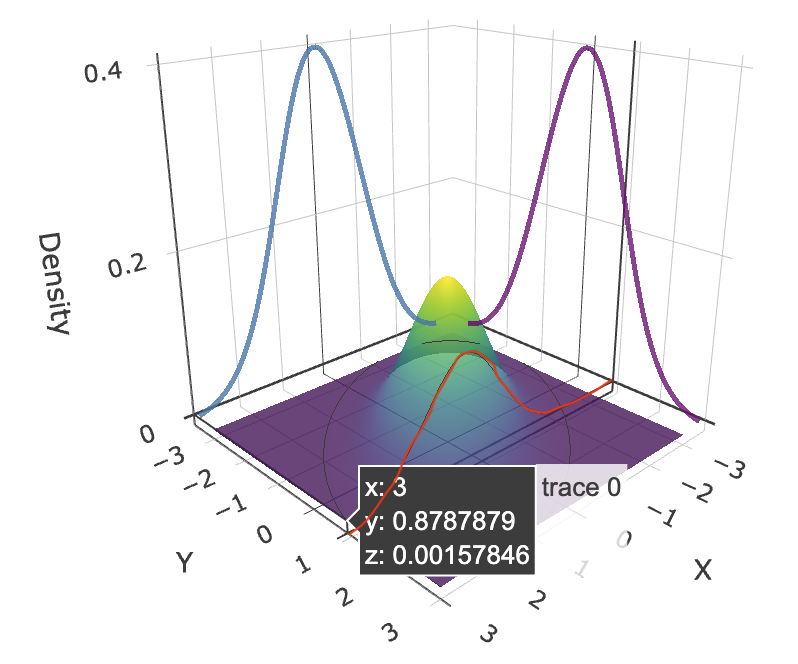
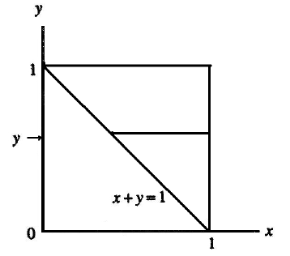
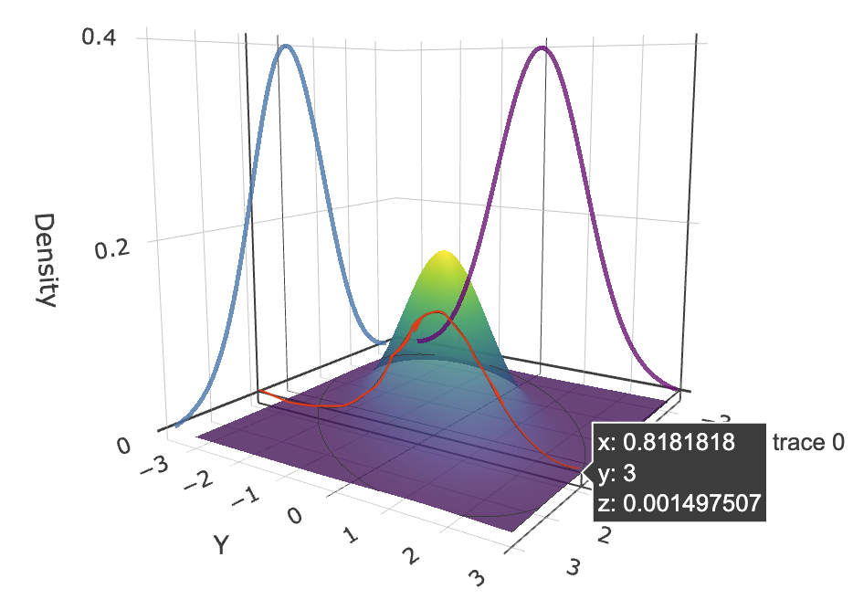
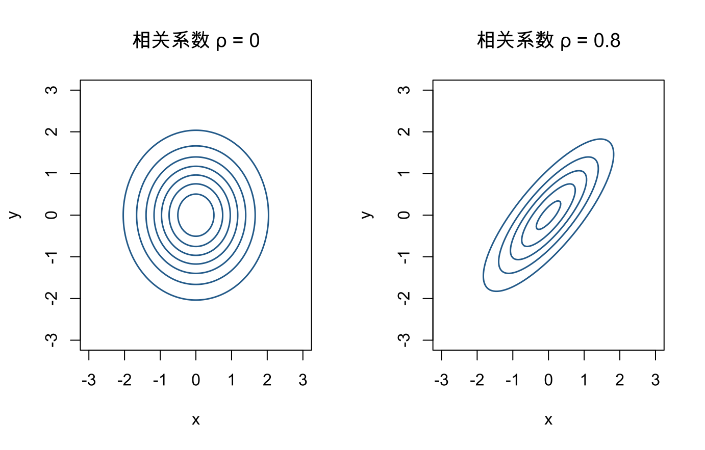
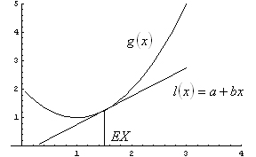

第 4 多元随机变量
本章对应原课件 chap-4.tex 及六个子文件，讨论联合与边缘分布、条件分布与独立性、二维变换、层次模型、多元正态分布以及常用概率不等式。原稿中的图形均保留；明显的积分变量、指数符号、矩阵公式和不等式排印问题已作最小更正，并记录在 migration_notes.md。
4.1 联合分布、边缘分布与函数期望
定义 4.1 随机变量 \(X,Y\) 的联合分布函数定义为
\[ F_{X,Y}(x,y)=P(X\le x,Y\le y). \]
若存在非负函数 \(f_{X,Y}\)，使任意 Borel 集 \(A\subset\mathbb R^2\) 满足
\[ P\{(X,Y)\in A\}=\iint_A f_{X,Y}(x,y)\,dx\,dy, \]
则称其为联合概率密度。离散情形相应地满足
\[ P\{(X,Y)\in A\}=\sum_{(x,y)\in A}p_{X,Y}(x,y). \]
定理 4.1 若 \(E|g(X,Y)|<\infty\)，则
\[ E\{g(X,Y)\}= \begin{cases} \displaystyle\int_{-\infty}^{\infty}\int_{-\infty}^{\infty} g(x,y)f_{X,Y}(x,y)\,dx\,dy,&\text{连续情形},\\[2mm] \displaystyle\sum_{x,y}g(x,y)p_{X,Y}(x,y),&\text{离散情形}. \end{cases} \]
展开证明
连续情形由联合密度的定义先对简单函数成立。对一般可积函数，可分别用非负简单函数单调逼近其正部与负部，得到
\[ E\{g(X,Y)\}=\iint_{\mathbb R^2}g(x,y)f_{X,Y}(x,y)\,dx\,dy. \]
离散情形把随机向量所有可能取值上的贡献相加：
\[ E\{g(X,Y)\}=\sum_{x,y}g(x,y)P(X=x,Y=y). \]
条件 \(E|g(X,Y)|<\infty\) 保证积分或级数绝对收敛，从而允许改变求和或积分次序。
联合密度可通过积分得到边缘密度：
\[ f_X(x)=\int_{-\infty}^{\infty}f_{X,Y}(x,y)\,dy,\qquad f_Y(y)=\int_{-\infty}^{\infty}f_{X,Y}(x,y)\,dx. \]

图 4.1: 原课件用于说明联合密度与边缘密度的图形
上图保留原课件截图。下面用标准独立二元正态模型 \(f_{X,Y}(x,y)=\phi(x)\phi(y)\) 对其进行 Plotly 交互复现：彩色曲面表示联合密度，两个竖直边界平面上的曲线分别表示 \(X\) 和 \(Y\) 的标准正态边缘密度。可拖动旋转、滚轮缩放，并将鼠标悬停在曲面或曲线上读取坐标和密度。
交互图需要浏览器启用 JavaScript；无法加载时请参照上方保留的原课件图片。
4.2 例 4.1.11：单位正方形上的联合密度
设
\[ f(x,y)= \begin{cases} 6xy^2,&0<x<1,\ 0<y<1,\\ 0,&\text{其他}. \end{cases} \]
最终有 \(f_X(x)=2x\)、\(f_Y(y)=3y^2\)（各自在 \((0,1)\) 上），并且 \(P(X+Y\ge1)=9/10\)。
查看详细解答
边缘密度为
\[ f_X(x)=\int_0^1 6xy^2\,dy=2x,\quad 0<x<1, \]
\[ f_Y(y)=\int_0^1 6xy^2\,dx=3y^2,\quad 0<y<1. \]
要求 \(P(X+Y\ge1)\)，积分区域为 \(A=\{(x,y):0<y<1,\ 1-y\le x\le1\}\)，故
\[ \begin{aligned} P(X+Y\ge1) &=\int_0^1\int_{1-y}^1 6xy^2\,dx\,dy\\ &=3\int_0^1y^2\{1-(1-y)^2\}\,dy =\frac9{10}. \end{aligned} \]

图 4.2: 例 4.1.11 的积分区域（原课件图）
4.3 例 4.1.12：三角支撑上的概率
设联合密度
\[ f(x,y)=e^{-y},\qquad 0<x<y<\infty. \]
最终结果为
\[ P(X+Y\ge1)=2e^{-1/2}-e^{-1}. \]
查看详细解答
它确为密度，因为 \(\int_0^\infty\int_x^\infty e^{-y}\,dy\,dx=1\)。事件 \(X+Y<1\) 与支撑集的交集为 \(0<x<1/2,\ x<y<1-x\)，因此
\[ \begin{aligned} P(X+Y\ge1) &=1-\int_0^{1/2}\int_x^{1-x}e^{-y}\,dy\,dx\\ &=1-\int_0^{1/2}\{e^{-x}-e^{-1+x}\}\,dx\\ &=2e^{-1/2}-e^{-1}. \end{aligned} \]

图 4.3: 例 4.1.12 的三角支撑与补事件区域（原课件图）
4.4 条件分布、条件期望与条件方差
当 \(p_X(x)>0\) 时，离散条件概率质量函数为
\[ p_{Y\mid X}(y\mid x)=P(Y=y\mid X=x) =\frac{p_{X,Y}(x,y)}{p_X(x)}. \]
连续情形在 \(f_X(x)>0\) 时定义为
\[ f_{Y\mid X}(y\mid x)=\frac{f_{X,Y}(x,y)}{f_X(x)}. \]

图 4.4: 原课件用于说明条件密度截面的图形
对上一节 \(f(x,y)=e^{-y}\)、\(0<x<y\) 的例子，
\[ f_{Y\mid X}(y\mid x)=e^{-(y-x)},\quad y>x, \]
因而 \(E(Y\mid X=x)=x+1\)、\(\operatorname{Var}(Y\mid X=x)=1\)。
查看详细解答
\[ f_X(x)=\int_x^\infty e^{-y}\,dy=e^{-x},\qquad x>0, \]
所以
\[ f_{Y\mid X}(y\mid x)= \begin{cases} e^{-(y-x)},&y>x,\\ 0,&\text{其他}. \end{cases} \]
这说明 \(Y\mid X=x\) 与 \(x+E\) 同分布，其中 \(E\sim\operatorname{Exponential}(1)\)。因此
\[ E(Y\mid X=x)=x+1,\qquad \operatorname{Var}(Y\mid X=x)=1. \]
关键是令 \(E=Y-x\)。条件密度表明 \(E\mid X=x\sim \operatorname{Exponential}(1)\)，所以平移只改变均值而不改变方差。
一般地，
\[ E(Y\mid X=x)=\int y f_{Y\mid X}(y\mid x)\,dy, \]
\[ \operatorname{Var}(Y\mid X=x)= \int\{y-E(Y\mid X=x)\}^2f_{Y\mid X}(y\mid x)\,dy. \]
4.5 独立性及其推论
定义 4.2 若对任意 Borel 集 \(A,B\) 都有
\[ P(X\in A,Y\in B)=P(X\in A)P(Y\in B), \]
则称 \(X,Y\) 相互独立。
对具有联合密度或联合质量函数的变量，独立性等价于
\[ f_{X,Y}(x,y)=f_X(x)f_Y(y). \]
Lemma 4.1 若联合概率函数可在整个支撑集上分解为 \(f_{X,Y}(x,y)=g(x)h(y)\)，则 \(X,Y\) 独立。函数 \(g,h\) 本身不必已经归一化。
展开证明
以连续情形为例。由归一化条件和可分解性，
\[ 1=\iint g(x)h(y)\,dx\,dy =\left\{\int g(x)\,dx\right\} \left\{\int h(y)\,dy\right\}. \]
记 \(G=\int g(x)dx\)、\(H=\int h(y)dy\)，则 \(GH=1\)。边缘密度为
\[ f_X(x)=g(x)H,\qquad f_Y(y)=h(y)G. \]
因此 \(f_X(x)f_Y(y)=g(x)h(y)GH=f_{X,Y}(x,y)\)，故 \(X,Y\) 独立。离散情形把积分替换为求和即可。
例如
\[ f(x,y)=\frac1{384}x^2y^4e^{-x/2-y},\qquad x,y>0, \]
可分解为只含 \(x\) 与只含 \(y\) 的乘积，故 \(X,Y\) 独立。
定理 4.2 若 \(X,Y\) 独立且期望存在，则
\[ E\{g(X)h(Y)\}=E\{g(X)\}E\{h(Y)\}. \]
若相应 MGF 在零点附近存在，则
\[ M_{X+Y}(t)=M_X(t)M_Y(t). \]
展开证明
独立性给出 \(f_{X,Y}(x,y)=f_X(x)f_Y(y)\)。连续情形中，
\[ \begin{aligned} E\{g(X)h(Y)\} &=\iint g(x)h(y)f_X(x)f_Y(y)\,dx\,dy\\ &=\left\{\int g(x)f_X(x)\,dx\right\} \left\{\int h(y)f_Y(y)\,dy\right\}\\ &=E\{g(X)\}E\{h(Y)\}. \end{aligned} \]
离散情形同理。再取 \(g(X)=e^{tX}\)、\(h(Y)=e^{tY}\)，便有
\[ M_{X+Y}(t)=E(e^{tX}e^{tY})=M_X(t)M_Y(t). \]
若独立的 \(X\sim N(\mu,\sigma^2)\)、\(Y\sim N(\gamma,\tau^2)\)，则
\[ X+Y\sim N(\mu+\gamma,\sigma^2+\tau^2). \]
查看详细解答
\[ M_{X+Y}(t) =\exp\left\{(\mu+\gamma)t+\frac{\sigma^2+\tau^2}{2}t^2\right\}, \]
因此 \(X+Y\sim N(\mu+\gamma,\sigma^2+\tau^2)\)。
4.6 二维变换与 Jacobian
设连续随机向量 \((X,Y)\) 的支撑集为 \(\mathcal A\)，定义 \(U=g_1(X,Y),V=g_2(X,Y)\)。若变换一一对应，反变换为 \(x=h_1(u,v),y=h_2(u,v)\)，且 Jacobian 非零，则在新支撑集
\[ \mathcal B=\{(u,v):(u,v)=(g_1(x,y),g_2(x,y)),\ (x,y)\in\mathcal A\} \]
上，
\[ f_{U,V}(u,v)= f_{X,Y}\{h_1(u,v),h_2(u,v)\} \left|\frac{\partial(x,y)}{\partial(u,v)}\right|, \]
\[ \frac{\partial(x,y)}{\partial(u,v)} = \begin{vmatrix} \partial x/\partial u&\partial x/\partial v\\ \partial y/\partial u&\partial y/\partial v \end{vmatrix}. \]
例 4.1 例 4.3.3（两个 Beta 变量的乘积） 设独立的
\[ X\sim\operatorname{Beta}(\alpha,\beta),\qquad Y\sim\operatorname{Beta}(\alpha+\beta,\gamma), \]
并令 \(U=XY,V=X\)。最终
\[ U\sim\operatorname{Beta}(\alpha,\beta+\gamma). \]
查看详细解答
反变换为 \(x=v,y=u/v\)。由于 \(0<x<1\)、\(0<y<1\)，新支撑集为 \(0<u<v<1\)。Jacobian 为
\[ J= \begin{vmatrix} 0&1\\ 1/v&-u/v^2 \end{vmatrix} =-\frac1v. \]
在 \(0<u<v<1\) 上，
\[ \begin{aligned} f_{U,V}(u,v) ={}&\frac{\Gamma(\alpha+\beta+\gamma)} {\Gamma(\alpha)\Gamma(\beta)\Gamma(\gamma)} v^{\alpha-1}(1-v)^{\beta-1}\\ &\times\left(\frac uv\right)^{\alpha+\beta-1} \left(1-\frac uv\right)^{\gamma-1}\frac1v. \end{aligned} \]
为得到 \(U\) 的边缘密度，对 \(v\) 从 \(u\) 积分到 1。整理被积函数后，
\[ \begin{aligned} f_U(u) ={}&\frac{\Gamma(\alpha+\beta+\gamma)} {\Gamma(\alpha)\Gamma(\beta)\Gamma(\gamma)}u^{\alpha-1}\\ &\times\int_u^1 \left(\frac uv-u\right)^{\beta-1} \left(1-\frac uv\right)^{\gamma-1} \frac{u}{v^2}\,dv. \end{aligned} \]
令
\[ w=\frac{u/v-u}{1-u},qquad dw=-\frac{u}{v^2(1-u)}\,dv. \]
当 \(v\) 从 \(u\) 增至 1 时，\(w\) 从 1 减至 0。于是
\[ \begin{aligned} f_U(u) &=\frac{\Gamma(\alpha+\beta+\gamma)} {\Gamma(\alpha)\Gamma(\beta)\Gamma(\gamma)} u^{\alpha-1}(1-u)^{\beta+\gamma-1} \int_0^1w^{\beta-1}(1-w)^{\gamma-1}\,dw\\ &=\frac{\Gamma(\alpha+\beta+\gamma)} {\Gamma(\alpha)\Gamma(\beta+\gamma)} u^{\alpha-1}(1-u)^{\beta+\gamma-1},\qquad 0<u<1, \end{aligned} \]
其中最后一步使用 \(B(\beta,\gamma)=\Gamma(\beta)\Gamma(\gamma)/\Gamma(\beta+\gamma)\)。 这正是 \(\operatorname{Beta}(\alpha,\beta+\gamma)\) 的密度。
4.7 层次模型与全期望公式
设母鱼产卵数 \(Y\sim\operatorname{Poisson}(\lambda)\)，每枚卵独立地以概率 \(p\) 存活，故 \(X\mid Y\sim\operatorname{Binomial}(Y,p)\)。对 \(x=0,1,\ldots\)，
\[ X\sim\operatorname{Poisson}(\lambda p). \]
查看详细解答
\[ \begin{aligned} P(X=x) &=\sum_{y=x}^{\infty}\binom yx p^x(1-p)^{y-x} \frac{e^{-\lambda}\lambda^y}{y!}\\ &=\frac{(\lambda p)^xe^{-\lambda}}{x!} \sum_{y=x}^{\infty}\frac{\{(1-p)\lambda\}^{y-x}}{(y-x)!}\\ &=\frac{(\lambda p)^xe^{-\lambda p}}{x!}. \end{aligned} \]
因此 \(X\sim\operatorname{Poisson}(\lambda p)\)，这就是 Poisson 稀释性质。
定理 4.3 定理 4.4.3（全期望公式） 若期望存在，则
\[ E(X)=E\{E(X\mid Y)\}. \]
展开证明
连续情形中，利用 \(f_{X,Y}(x,y)=f_{X\mid Y}(x\mid y)f_Y(y)\)，有
\[ \begin{aligned} E(X) &=\int_{-\infty}^{\infty}\int_{-\infty}^{\infty} x f_{X,Y}(x,y)\,dx\,dy\\ &=\int_{-\infty}^{\infty} \left\{\int_{-\infty}^{\infty}x f_{X\mid Y}(x\mid y)\,dx\right\} f_Y(y)\,dy\\ &=\int_{-\infty}^{\infty}E(X\mid Y=y)f_Y(y)\,dy =E\{E(X\mid Y)\}. \end{aligned} \]
离散情形将两个积分替换为求和，推导完全相同。
在平方可积情形，\(E(X\mid Y)\) 还是所有 \(Y\) 的可测函数中对 \(X\) 的最佳均方预测：
\[ E\{X-E(X\mid Y)\}^2=\inf_h E\{X-h(Y)\}^2. \]
4.8 混合分布与两类层次例子
定义 4.3 若 \(X\) 的条件分布依赖于另一个本身也服从某分布的随机量，则 \(X\) 的边缘分布称为混合分布。
考虑
\[ X\mid Y\sim\operatorname{Binomial}(Y,p),\quad Y\mid\Lambda\sim\operatorname{Poisson}(\Lambda),\quad \Lambda\sim\operatorname{Exponential}(\text{scale }\beta). \]
全期望公式给出 \(E(X)=pE(Y)=pE(\Lambda)=p\beta\)。对 \(y=0,1,\ldots\)，
最终 \(Y\) 服从支撑为 \(0,1,\ldots\)、成功概率为 \(1/(1+\beta)\) 的几何分布。
查看详细解答
\[ \begin{aligned} P(Y=y) &=\int_0^\infty \frac{\lambda^ye^{-\lambda}}{y!}\frac1\beta e^{-\lambda/\beta}\,d\lambda\\ &=\frac1{\beta y!}\int_0^\infty \lambda^ye^{-\lambda(1+1/\beta)}\,d\lambda\\ &=\left(\frac{\beta}{1+\beta}\right)^y\frac1{1+\beta}. \end{aligned} \]
所以 \(Y\) 服从成功概率 \(1/(1+\beta)\)、支撑为 \(0,1,\ldots\) 的几何分布。若把 \(\Lambda\) 推广为 Gamma 混合变量，则得到负二项混合分布。
另一个层次模型是
\[ X_i\mid P_i\sim\operatorname{Bernoulli}(P_i),\qquad P_i\sim\operatorname{Beta}(\alpha,\beta). \]
若 \(P_i\) 是药物对第 \(i\) 位患者的成功概率，\(Y=\sum_{i=1}^nX_i\)，则
\[ E(Y)=\sum_{i=1}^nE\{E(X_i\mid P_i)\} =\sum_{i=1}^nE(P_i) =n\frac{\alpha}{\alpha+\beta}. \]
4.9 全方差公式
定理 4.4 若二阶矩存在，则
\[ \operatorname{Var}(X) =E\{\operatorname{Var}(X\mid Y)\} +\operatorname{Var}\{E(X\mid Y)\}. \]
Proof.
展开证明
写成
\[ X-EX=\{X-E(X\mid Y)\}+\{E(X\mid Y)-EX\}. \]
平方取期望后，交叉项为零，因为
\[ E\!\left[\{X-E(X\mid Y)\}\{E(X\mid Y)-EX\}\right]=0. \]
其余两项分别是 \(E\{\operatorname{Var}(X\mid Y)\}\) 与 \(\operatorname{Var}\{E(X\mid Y)\}\)。
交叉项为零的理由可进一步写为
\[ \begin{aligned} &E\!\left[\{X-E(X\mid Y)\}\{E(X\mid Y)-EX\}\right]\\ &\quad=E\!\left[ \{E(X\mid Y)-EX\} E\{X-E(X\mid Y)\mid Y\}\right]=0, \end{aligned} \]
因为 \(E\{X-E(X\mid Y)\mid Y\}=0\)。
4.10 多元正态分布
定义 4.4 \(m\) 维随机向量 \(\mathbf X=(X_1,\ldots,X_m)^\top\) 若服从 \(N_m(\boldsymbol\mu,\boldsymbol\Sigma)\)，其中 \(\boldsymbol\Sigma\) 正定，则联合密度为
\[ f_{\mathbf X}(\mathbf x)= \frac{\exp\{-\tfrac12(\mathbf x-\boldsymbol\mu)^\top \boldsymbol\Sigma^{-1}(\mathbf x-\boldsymbol\mu)\}} {(2\pi)^{m/2}|\boldsymbol\Sigma|^{1/2}}. \]
其多元 MGF 为
\[ M_{\mathbf X}(\mathbf t) =E\{\exp(\mathbf t^\top\mathbf X)\} =\exp\left( \boldsymbol\mu^\top\mathbf t+ \frac12\mathbf t^\top\boldsymbol\Sigma\mathbf t \right), \]
故 \(E(\mathbf X)=\boldsymbol\mu\)、 \(\operatorname{Var}(\mathbf X)=\boldsymbol\Sigma\)。
当 \(m=2\)，
\[ \boldsymbol\Sigma= \begin{pmatrix} \sigma_1^2&\rho\sigma_1\sigma_2\\ \rho\sigma_1\sigma_2&\sigma_2^2 \end{pmatrix}, \]
\[ \boldsymbol\Sigma^{-1} =\frac1{1-\rho^2} \begin{pmatrix} 1/\sigma_1^2&-\rho/(\sigma_1\sigma_2)\\ -\rho/(\sigma_1\sigma_2)&1/\sigma_2^2 \end{pmatrix}. \]
令 \(z_i=(x_i-\mu_i)/\sigma_i\)，则
\[ f(x_1,x_2)= \frac{\exp\left\{-\dfrac{z_1^2-2\rho z_1z_2+z_2^2} {2(1-\rho^2)}\right\}} {2\pi\sigma_1\sigma_2\sqrt{1-\rho^2}}. \]
其中 \(\operatorname{Cov}(X_1,X_2)=\rho\sigma_1\sigma_2\)，相关系数为 \(\rho\)。
grid <- seq(-3, 3, length.out = 120)
draw_bvn <- function(rho, main) {
z <- outer(grid, grid, function(x, y) {
exp(-(x^2 - 2 * rho * x * y + y^2) / (2 * (1 - rho^2))) /
(2 * pi * sqrt(1 - rho^2))
})
contour(grid, grid, z, nlevels = 7, drawlabels = FALSE,
col = "#2C6E9B", lwd = 1.5, xlab = "x", ylab = "y", main = main)
}
old_par <- par(no.readonly = TRUE)
par(mfrow = c(1, 2), family = course_plot_family())
draw_bvn(0, "相关系数 ρ = 0")
draw_bvn(0.8, "相关系数 ρ = 0.8")
图 4.5: 不同相关系数下的标准二元正态密度等高线
par(old_par)4.11 Young、Hölder 与 Cauchy–Schwarz 不等式
Lemma 4.2 Young 不等式（原稿 Lemma 4.7.1） 若 \(a,b>0\)， \(p,q>1\) 且 \(1/p+1/q=1\)，则
\[ \frac{a^p}{p}+\frac{b^q}{q}\ge ab, \]
等号当且仅当 \(a^p=b^q\)。
展开证明
固定 \(b\)，考察 \(g(a)=a^p/p+b^q/q-ab\)，其唯一极小点满足 \(a^{p-1}=b\)。又因 \(g''(a)=(p-1)a^{p-2}>0\)，该驻点是全局极小点。 由 \(1/p+1/q=1\) 得 \(q=p/(p-1)\)，故驻点条件等价于 \(a^p=b^q\)。在此点，
\[ g(a)=\frac{a^p}{p}+\frac{a^p}{q}-a^p =a^p\left(\frac1p+\frac1q-1\right)=0. \]
所以 \(g(a)\ge0\)，且等号当且仅当 \(a^p=b^q\)。
定理 4.5 Hölder 不等式 若相应矩有限，则
\[ |E(XY)|\le E|XY| \le\{E|X|^p\}^{1/p}\{E|Y|^q\}^{1/q}. \]
展开证明
在 Young 不等式中令
\[ a=\frac{|X|}{\{E|X|^p\}^{1/p}},\qquad b=\frac{|Y|}{\{E|Y|^q\}^{1/q}}, \]
若两个分母均非零，逐点应用 Young 不等式并取期望，得到
\[ E\left[ \frac{|X|}{\{E|X|^p\}^{1/p}} \frac{|Y|}{\{E|Y|^q\}^{1/q}} \right] \le \frac1p+\frac1q=1. \]
两边乘回分母即得 Hölder 不等式；若某个分母为零，则对应随机变量几乎处处为零，结论仍显然成立。再结合 \(|E(XY)|\le E|XY|\) 完成证明。
取 \(p=q=2\) 得 Cauchy–Schwarz 不等式
\[ |E(XY)|\le E|XY| \le\{E(X^2)\}^{1/2}\{E(Y^2)\}^{1/2}. \]
将其用于 \(X-EX\) 与 \(Y-EY\)，得到
\[ \operatorname{Cov}^2(X,Y) \le\operatorname{Var}(X)\operatorname{Var}(Y). \]
4.12 Lyapunov 与 Minkowski 不等式
Hölder 不等式还给出：若 \(p>1\)，
\[ E|X|\le\{E|X|^p\}^{1/p}. \]
更一般地，若 \(0<r<p\)，则 Lyapunov 不等式为
\[ \{E|X|^r\}^{1/r}\le\{E|X|^p\}^{1/p}. \]
定理 4.6 Minkowski 不等式 对 \(1<p<\infty\)，
\[ \{E|X+Y|^p\}^{1/p} \le\{E|X|^p\}^{1/p}+\{E|Y|^p\}^{1/p}. \]
展开证明
证明从
\[ E|X+Y|^p \le E\{|X||X+Y|^{p-1}\} +E\{|Y||X+Y|^{p-1}\} \]
出发，分别使用 Hölder 不等式。共轭指数 \(q=p/(p-1)\) 满足 \(q(p-1)=p\)，约去 \(\{E|X+Y|^p\}^{(p-1)/p}\) 即得结论。
若 \(E|X+Y|^p=0\)，结论显然成立；否则除以该正因子后得到
\[ \{E|X+Y|^p\}^{1/p} \le \{E|X|^p\}^{1/p}+\{E|Y|^p\}^{1/p}. \]
4.13 凸函数与 Jensen 不等式
定义 4.5 函数 \(g\) 若对任意 \(x,y\) 和 \(0<\lambda<1\) 满足
\[ g\{\lambda x+(1-\lambda)y\} \le\lambda g(x)+(1-\lambda)g(y), \]
则称 \(g\) 为凸函数；若 \(-g\) 凸，则 \(g\) 为凹函数。

图 4.6: 凸函数的弦位于图像上方（原课件图）
对凸函数，割线斜率
\[ g_x^\perp(y)=\frac{g(y)-g(x)}{y-x} \]
随 \(y\) 单调不减。因此右导数 \(D^+g(x)=\lim_{y\downarrow x}g_x^\perp(y)\) 所确定的支撑线位于函数图像下方：
\[ g(z)\ge g(x)+D^+g(x)(z-x). \]
展开证明
若 \(x<y'<y\)，令 \(\lambda=(y-y')/(y-x)\)，则 \(y'=\lambda x+(1-\lambda)y\)。凸性给出
\[ g(y')\le \frac{y-y'}{y-x}g(x)+ \frac{y'-x}{y-x}g(y). \]
移项并除以正数 \(y'-x\)，得到
\[ \frac{g(y')-g(x)}{y'-x} \le \frac{g(y)-g(x)}{y-x}. \]
其余点序情形同理，所以割线斜率随第二个端点单调不减。令端点趋近 \(x\)，便得到由右导数确定的支撑线不高于函数图像。
定理 4.7 Jensen 不等式 若 \(g\) 为凸函数且期望存在，则
\[ E\{g(X)\}\ge g(EX). \]
展开证明
令 \(m=E(X)\)。在点 \(m\) 处取凸函数的一条支撑线 \(\ell(x)=a+bx\)，使 \(g(x)\ge\ell(x)\) 且 \(g(m)=\ell(m)\)。期望保持不等式，因此
\[ E\{g(X)\}\ge E\{a+bX\} =a+bE(X)=\ell(m)=g(m)=g\{E(X)\}. \]
若 \(g\) 为线性函数，等号由期望的线性性直接成立。一般而言，等号要求 \(X\) 几乎处处落在 \(g\) 与所选支撑线重合的集合上。

图 4.7: Jensen 不等式的切线解释（原课件图）
若 \(g\) 二阶可微，则 \(g''(x)\ge0\) 是凸性的充分必要条件。线性函数中 Jensen 等号恒成立；一般等号条件是 \(X\) 几乎处处落在 \(g\) 与某条支撑线重合的集合上。
4.14 Jensen 不等式的两个例子
对非负数 \(a_1,\ldots,a_n\)，算术平均、几何平均和调和平均分别为
\[ a_A=\frac1n\sum_{i=1}^na_i,\qquad a_G=\left(\prod_{i=1}^na_i\right)^{1/n},\qquad a_H=\left(\frac1n\sum_{i=1}^n\frac1{a_i}\right)^{-1}. \]
由对数的凹性及倒数函数的凸性可得
\[ a_H\le a_G\le a_A. \]
查看详细解答
对离散均匀随机指标 \(I\in\{1,\ldots,n\}\)，令 \(X=a_I\)。由于 \(\log\) 是凹函数，Jensen 不等式给出
\[ \frac1n\sum_{i=1}^n\log a_i \le \log\left(\frac1n\sum_{i=1}^na_i\right). \]
两边取指数得到 \(a_G\le a_A\)。再对正数 \(1/a_i\) 应用已经证明的 “几何平均不超过算术平均”，
\[ \left(\prod_{i=1}^n\frac1{a_i}\right)^{1/n} \le\frac1n\sum_{i=1}^n\frac1{a_i}. \]
取倒数即得 \(a_H\le a_G\)。
若 \(f,g\) 是密度且 \(X\sim f\)，则
\[ E_f\!\left[\log\frac{g(X)}{f(X)}\right] \le\log E_f\!\left[\frac{g(X)}{f(X)}\right]=0, \]
因此
\[ E_f\{\log g(X)\}\le E_f\{\log f(X)\}. \]
查看详细解答
在 \(g(x)>0\) 且 \(f(x)>0\) 的区域令 \(R(X)=g(X)/f(X)\)。因为 \(\log\) 为凹函数，
\[ E_f\{\log R(X)\}\le\log E_f\{R(X)\}. \]
而
\[ E_f\{R(X)\}=\int \frac{g(x)}{f(x)}f(x)\,dx =\int g(x)\,dx=1. \]
所以 \(E_f\{\log g(X)-\log f(X)\}\le0\)，整理便得结论。
这等价于 Kullback–Leibler 散度非负，也是最大似然方法偏好真实模型的一个理论解释。